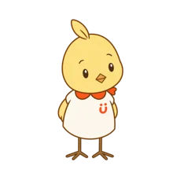
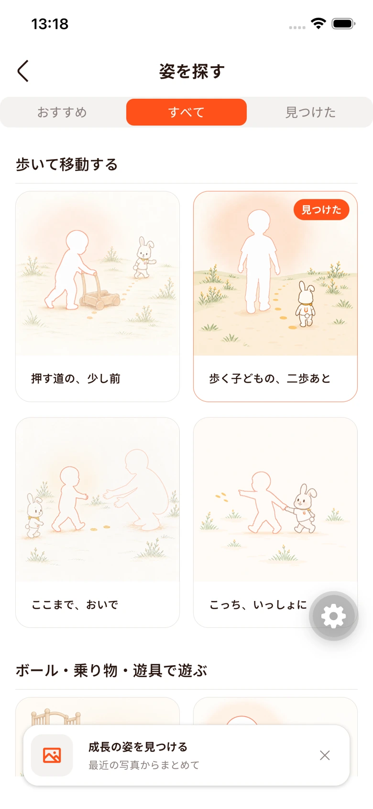
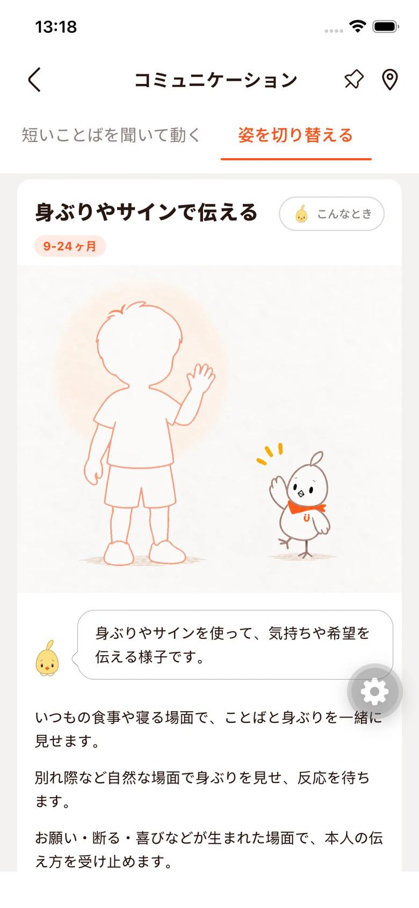
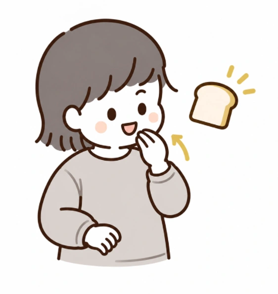
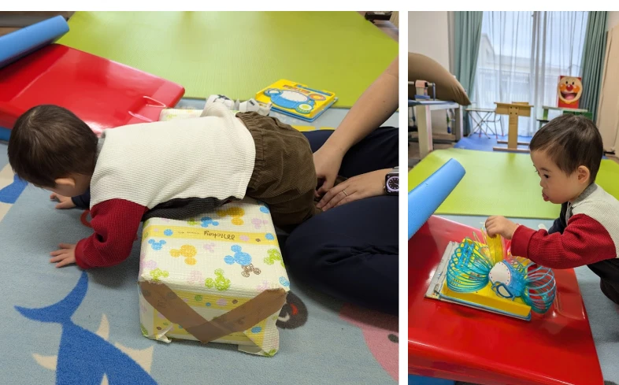

小さな変化に、気づく。
「こんな姿、あったね」が
成長の手がかりに。
にぎる、つまむ、気持ちを伝える。
イラストで見つけて、発達の歩みを振り返る。
いつもの時間が、関わりのきっかけに。
毎日の遊びと関わりに、
「やってみよう」を。
身近なものや、いつものやり取りから。
遊び方を見て、試した様子を記録できます。
遊び・関わりのアイディア

「食べる」を身振りで伝えよう
食事の前に「食べよう」と声をかけ、指を口へ運ぶ身振りを見せます。
アプリの遊び紹介よりリハビリの日記録イメージ

今日取り組んだこと、気づいたこと。
写真や動画といっしょに。
写真や動画といっしょに。
写真を使った紹介イメージ
おうちも、リハビリも。
その日の様子を、
あとから見返せる。
夢中になった遊びや、練習した動き。
残しておくと、次の相談にもつながります。
HUGMAP BUDDIES 先行体験版
きみと、おうちの人のバディ。
気になることを相談し、その子に合う関わり方を一緒に考えるAIの仲間です。
親も子も、共に育つ場所に。
ダウン症のある第二子を育てる中で、私自身、知識に助けられ、人との対話に支えられ、子どもからたくさんのことを教わってきました。保護者が少し肩の力を抜いて、わが子と自分を見つめられる。そんな場所をつくりたいと思っています。
With Uのはじまりつくった人・Ting
User's Voice
ユーザーの声
公開中のHugMapをご利用の方から
入力した情報がサポートブックにまとめられるのが感動しました！これは画期的で便利です！ところどころ書かれているメッセージが温かくて、作成者の愛を感じました。
座れるか座れないかのゼロイチではなく、その中間にも発達はあると知れて嬉しい。発達段階の解説や「やってみよう」の取り組みアドバイスが具体的で、実践しやすいです。
初めてできるようになったことを記入しておけるのは、見返した時に思い出に残っていいなと思います。記入項目が細かく指定されていて、親としても子の様子を把握しやすいです。
保護者様のご負担を減らし、支援員にとっても必要な情報にアクセスできる、双方向に価値のあるアプリだと感じています。民間ならではのフットワークで繋がれるツールとしても期待感が大きいです。
HugMapを、家族の毎日に。
招待制の先行体験 · iOS・Android対応
バディと、毎日の「どうしよう」を一緒に。
参加条件とインストール方法をメールでご案内します。
先行体験に申し込むGoogleフォームへ移動します。
施設での導入・連携をご検討の方へ
お問い合わせ